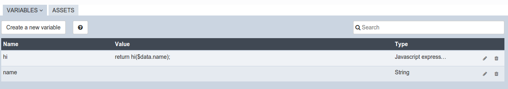
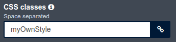

Assets
Assets enable you to add web resources to pages, layouts and forms. We will use “page” to refer to those three artifacts.
Available asset types are JavaScript, CSS, image, and (in the Subscription editions) Localization.
Assets can be Local (file stored in the artifact) or External (URL). A localization asset is always local and its name is always “Localization.json”. An external asset name must be a standard URL.
Assets in the page editor
Manage assets using the Assets tab in the bottom panel of the whiteboard.
JavaScript assets
With a Javascript asset you can add a script. It will be loaded in the global scope and you can use it in data.
For example, add a script myscript.js to display this welcome message:
function hi(name){
return 'Welcome ' + name + ' to the UI Designer';
}
To add and use this asset:
- In the Assets panel, click Add a new asset.
- Select the type: JavaScript.
- Set the source to Local.
- Upload your JavaScript file. The file appears in the asset list.
- In the Variables panel, add a new String variable called “name”.
- Create a JavaScript expression that calls the “hi” function.
- Add an input widget linked to the “name” variable and a text widget linked to the hi variable.

- Click on the preview button. You will see a page containing the welcome message. The name will change when you change the value of the name variable.
CSS assets
Add CSS assets at page level and use them to edit the CSS classes property of any widget. The UI Designer integrates the default Bootstrap style.
For example, you can create a file mycss.css with this content:
.myOwnStyle{
background-color : #404853;
color: #ffffff;
}
- In the Assets panel, click Add a new asset.
- Select the type: CSS.
- Set the the source to Local.
- Upload your CSS file. The file appears in the asset list.
- Drag a widget text onto the whiteboard.
- Select this widget.
- In the property panel add your CSS class

- Click on the preview button. You will see white text on a gray background.
Image assets
An image asset can be displayed in a custom widget (see the Custom widget editor > Assets help). Add an image asset at page level if the image is used as a custom widget property.
Localization asset (Subscription editions only)
The localization asset of a page is a local file called localization.json that contains the text presented in the page with translations into the languages that you want to support. This enables you to create multi-language pages.
A page can not have more than one localization asset. When you upload a new localization.json asset file, it overwrites the existing one.
Asset list
The list contains both page assets and the assets of the custom widgets used in this page.
In the list, you can delete page assets only, view local assets, and edit external assets of a page. You can not manually change the order of assets in the page. You can also indicate whether an asset is active. To avoid dependency clashes with multiple version of assets, make sure only one version of an asset is active in a page.
At runtime, custom widget assets are loaded in alphabetical order of the custom widgets. For each custom widget, the assets are loaded in the order they are listed. Then page assets are loaded. JavaScript and CSS assets are loaded in the page header.
Assets in the custom widget editor
To use the same asset in several pages, you can add it to a custom widget and use this custom widget in your application pages or forms. When you add a custom widget with assets to a page, those assets are automatically linked to the page. A custom widget can not contain a localization asset. Instead, include the text and translations in the page localization asset for each page where the custom widget is used.
JavaScript assets
In a custom widget JavaScript asset, you can specify a dependency on an Angular module. First add the JavaScript asset, and then add the module name in the dedicated section. You can find the the available modules on http://ngmodules.org/.
Image assets
Note: Applies to 7.0.0 and 7.0.1. From 7.0.2, use the image widget.
In the custom widget editor, create a widget with two properties:
{name : "src", type : "text", "Default value" : "assets/img/assetname.png"}
{name : "description", type : "text"}
You do not need to define a controller but you must create an HTML template: <img ng-src="" alt="">
You can now use this custom widget in any page, by adding an image asset and changing the property src to point to it. For an external asset, specify a URL. To load a local image, specify a relative path as follows:
assets/img/[image name]for a local image added in the pagewidgets/[custom widget name]/assets/img/[image name]for a local image added in a widget
Asset list
In a custom widget, you can use the arrows to reorder assets, view local assets, edit external assets, and delete an asset.
You can also indicate whether an asset is active. To avoid dependency clashes with multiple version of assets, make sure only one version of an asset is active in a page.
At runtime, assets of a custom widget are loaded in the order defined.